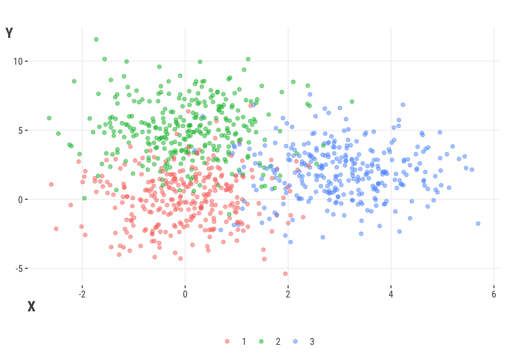
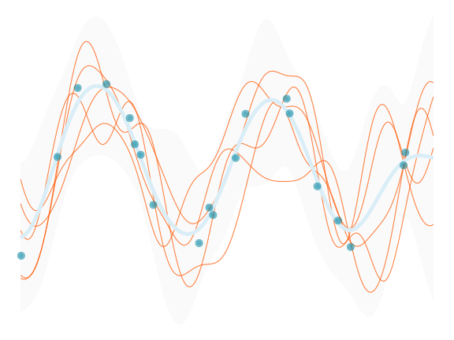
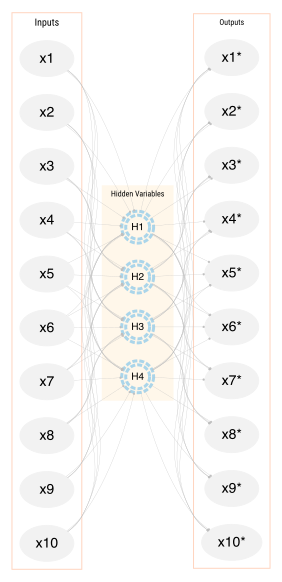
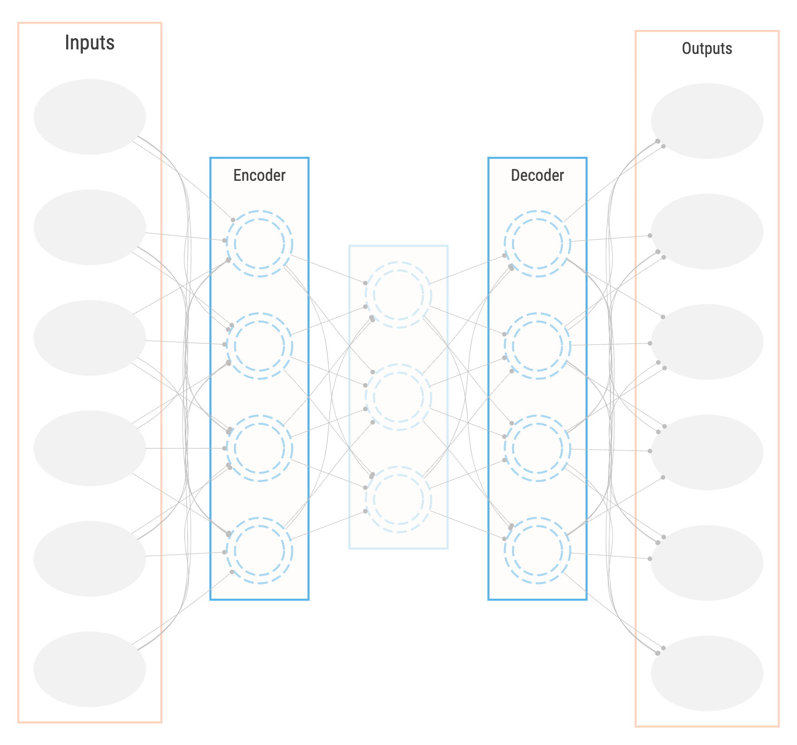
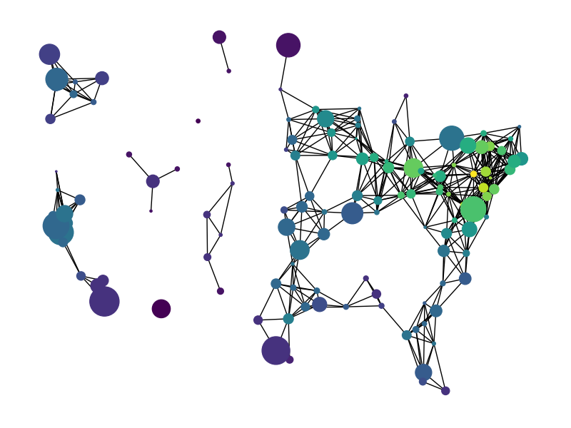
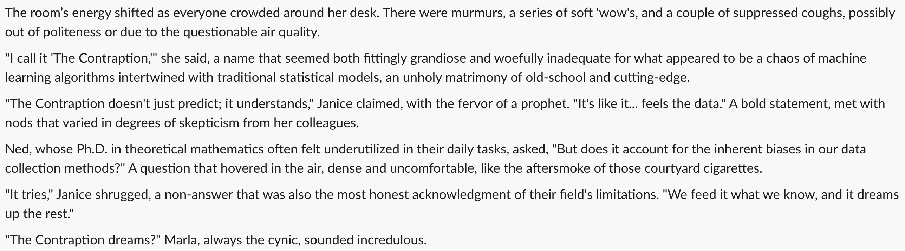

8 More ML

We’ve explored some fundamental aspects of machine learning (ML) for typical data settings and modeling objectives, but there are many other areas of machine learning that we haven’t covered, and honestly, you just can’t cover everything. The field is always evolving, progressing, and branching out, and covers every data domain, which is what makes it so fun! Here we’ll briefly discuss some of the other aspects of ML that you’ll want to be aware of as you continue your journey.
8.1 Key Ideas
As we wrap up our discussion on machine learning, here are some things to keep in mind:
- ML can be applied to virtually any modeling or data domain
- Other widely used areas and applications of ML include unsupervised learning, reinforcement learning, computer vision, natural language processing, and more generally, artificial intelligence.
- While tabular data has traditionally been the primary format for modeling, the landscape has changed dramatically, and you may need to incorporate other data to reach your modeling goals.
8.1.1 Why this matters
It’s very important to know just how unlimited the modeling universe is, but also to recognize the common thread that connects all models. Even when we get into other data situations and complex models, we can always fall back on the core approaches we’ve already seen and know well at this point, and know that those ideas can potentially be applied in any modeling situation.
8.1.2 Good to know
For the content in this chapter, a basic idea of modeling and machine learning would probably be enough. We’re not going to get too technical in this section.
8.2 Unsupervised Learning
All the models considered thus far would fall under the name of supervised learning. That is, we have a target variable that we are trying to predict with various features, and we use the data to train a model to predict the target. However, there are settings in which we do not have a target variable, or we do not have a target variable for all of the data. In these cases, we can still use what’s often referred to as unsupervised learning to learn about the data. Unsupervised learning is a type of machine learning that involves training a model without an explicit target variable in the sense that we’ve seen. But to be clear, a model and target is still definitely there! Unsupervised learning attempts learn patterns in the data in a general sense, and can be used in a wide range of applications, including clustering, anomaly detection, and dimensionality reduction. Although much of data science instruction seems to treat these as fundamentally different modeling approaches, just like much of what we’ve seen, it’s probably best to think of these as different flavors of a more general approach.
Traditionally, one of the more common applications of unsupervised learning falls under the heading of dimension reduction, or data compression, such that we reduce features to a smaller latent, or hidden, or unobserved, subset that accounts for most of the (co-)variance of the larger set. Alternatively, we reduce the rows to a small number of hidden, or unobserved, clusters. For example, we start with 100 features and reduce them to 10 features that still account for most of what’s important in the original set, or we classify each observation as belonging to 2-3 clusters. Either way, the primary goal is to reduce the dimensionality of the data, not predict an explicit target.
Classical methods in this domain include principal components analysis (PCA), singular value decomposition (SVD), and factor analysis, which are geared toward reducing column dimensions, as well as cluster methods such as k-means and hierarchical clustering for reducing observations into clusters. Sometimes these methods are often used as preprocessing steps for supervised learning problems, or as a part of exploratory data analysis, but often they are an end in themselves. Most of us are familiar with recommender systems, whether via Netflix or Amazon, which suggest products or movies, and we’re all now becoming extremely familiar with text analysis methods via chatbots and similar. While the underlying models are notably more complex these days, they actually just started off as SVD (recommender systems) or a form of factor analysis (text analysis via latent semantic analysis/latent dirichlet allocation). Having a conceptual understanding of the simpler methods can aid in understanding the more complex ones.
8.2.1 Connections
8.2.1.1 Clusters are categorical latent features
In both clustering rows and reducing columns, we’re essentially reducing the dimension of the features. For methods like PCA and factor analysis, we’re explicitly reducing the number of data columns to a smaller set of numeric features. For example, we might take answers to responses to dozens of questions from a personality inventory, and reduce them to five key features that represent general aspects of personality. These new features are on their own scale, often standardized, but they still reflect at least some of the original items’ variability 1.
Now, imagine if we reduced the features to a single categorical variable. Now you have cluster analysis! You can discretize any continuous feature to a coarse couple of categories, and this goes for latent variables as well as those we actually observe in our data. For example, if we do a factor analysis with one latent feature, we could either convert it to a probability of some class with an appropriate transformation, or just say that scores higher than some cutoff are in cluster A and the others are in cluster B. Indeed, there is a whole class of clustering models called mixture models that do just that- they estimate the latent probability of class membership. Many of these approaches are conceptually similar or even identical, and the primary difference is how we think about and interpret the results.
8.2.1.2 PCA as a neural network
Consider the following neural network, called an autoencoder. Its job is to shrink the features down to a smaller, simpler representation, and then rebuild it from the compressed state to an output that matches the original as closely as possible. It’s trained by minimizing the error between the original data and the reconstructed data. The autoencoder is a special case of a neural network used as a component of many larger architectures such as those seen with large language models, but can be used for dimension reduction in and of itself if we are specifically interested in the compression layer, sometimes called a bottleneck.

Consider the following setup for such a situation:
- Single hidden layer
- Number of hidden nodes = number of inputs
- Linear activation function
An autoencoder in this case would be equivalent to principal components analysis. In the approach described, PCA perfectly reconstructs the original data when considering all components, and so the error would be zero. But that doesn’t give us any dimension reduction, we still have as many nodes in the compression layer as we did inputs. So with PCA we often only retain a small number of components that capture the data variance by some arbitrary amount. The discarded nodes are actually still estimated though.
Neural networks however are not bound to linear activation functions, the size of the inputs or even a single layer, and so they provide a much more flexible approach that can compress the data at a certain layer, but still have very good reconstruction error. Typical autoencoders would have multiple layers with notably more nodes than inputs. It’s not as easily interpretable as typical factor analytic techniques, and we still have to sort out the architecture. However, it’s a good example of how the same underlying approach can be used for different purposes.

8.2.1.3 Latent Linear Models
Another thing to be aware of is that some dimension reduction techniques can be thought of as latent linear models. The following depicts factor analysis as a latent linear model. The ‘targets’ are the observed features, and we predict each one by some linear combination of latent variables.
\[ \begin{aligned} x_1 &= \beta_{11} h_1 + \beta_{12} h_2 + \beta_{13} h_3 + \beta_{14} h_4 + \epsilon_1 \\ x_2 &= \beta_{21} h_1 + \beta_{22} h_2 + \beta_{23} h_3 + \beta_{24} h_4 + \epsilon_2 \\ x_3 &= \beta_{31} h_1 + \beta_{32} h_2 + \beta_{33} h_3 + \beta_{34} h_4 + \epsilon_3 \\ \end{aligned} \]
In this scenario, the \(h\) are estimated latent variables, and \(\beta\) are the coefficients, which in some contexts are called loadings. The \(\epsilon\) are the residuals, which are assumed to be independent and normally distributed as with a standard linear model. The \(\beta\) are usually estimated by maximum likelihood. The latent variables are not observed, but are to be estimated as part of the modeling process2, and typically standardized with mean 0 and standard deviation of 1. The number of latent variables we use is a hyperparameter in the ML sense, and so can be determined by the usual means3. To tie some more common models together:
- PCA is a factor analysis with no (residual) variance, and the latent variables are orthogonal (independent).
- Probabilistic PCA is a factor analysis with constant residual variance.
- Factor analysis is a factor analysis with varying residual variance.
- Independent component analysis is a factor analysis that does not assume an underlying gaussian data generating process.
- Non-negative matrix factorization and latent dirichlet allocation are factor analyses applied to counts (think poisson and multinomial regression).
8.2.2 Other unsupervised learning techniques
There are several techniques that are used to visualize high-dimensional data in simpler ways, such as multidimensional scaling, t-SNE, and (H)DBSCAN. These are often used as a part of exploratory data analysis to identify groups.
Cluster analysis is a method with a long history and many different approaches, including hierarchical clustering algorithms (agglomerative, divisive), k-means, and more. Distance matrices are often the first step for these clustering approaches, and there are many ways to calculate distances between observations. Conversely, some methods use adjacency matrices, which focus on similarity of observations rather than differences (like correlations), are can be used for graph-based approaches to find hidden clusters.
Anomaly/outlier detection is an approach for finding ‘unusual’ data points, or otherwise small, atypical clusters. This is often done by looking for data points that are far from the rest of the data, or that are not well explained by the model. This approach is often used for situations like fraud detection or network intrusion detection. Standard clustering or modeling techniques might be used to identify outliers, or specialized techniques might be used.

Network analysis is a type of unsupervised learning that involves analyzing the relationships between entities. It is a graph-based approach that involves identifying nodes (e.g., people) and edges (e.g., do they know each other?) in a network. It is used in a wide range of applications, like identifying communities within a network, or to see how they evolve over time. It is also used to identify relationships between entities, such as people, products, or documents. One might be interested in such things as which nodes that have the most connections, or the general ‘connectedness’ of a network. Network analysis or similar graphical models typically have their own clustering techniques that are based on the edge (connection) weights between individuals, such as modularity, or the number of edges between individuals, such as k-clique.
In summary, there are many methods that fall under the umbrella of unsupervised learning, but even when you don’t think you have an explicit target variable, you can still understand or frame these as models in a similar way to help you understand the data. It’s important to not get hung up on trying to distinguish modeling approaches with somewhat arbitrary labels, and focus more on what their modeling goal is and how best to achieve it!
8.3 Reinforcement Learning

Reinforcement learning (RL) is a type of modeling approach that involves training an agent to make decisions in an environment. The agent receives feedback in the form of rewards or punishments for its actions, and the goal is to maximize its rewards over time by learning which actions lead to positive or negative outcomes. Typical data involves a sequence of states, actions, and rewards, and the agent learns a policy that maps states to actions. The agent learns by interacting with the environment, and the environment changes based on the agent’s actions.
The agent’s goal is to learn a policy, which is a set of rules that dictate which actions to take in different situations. The agent learns by trial and error, adjusting its policy based on the feedback it receives from the environment. The classic example is a game like chess or a simple video game. In these scenarios, The agent learns which moves (actions) lead to winning the game (positive reward) and which moves lead to losing the game (negative reward). Over time, the agent improves its policy to make better moves that increase its chances of winning.
One of the key challenges in reinforcement learning is balancing exploration and exploitation. Exploration is about trying new actions that could lead to higher rewards, while exploitation is about sticking to the actions that have already been found to give good rewards.
Reinforcement learning has many applications, including robotics, games, and autonomous driving, but there is little restriction on where it might be applied. It is often a key part of some deep learning models, where reinforcement is supplied via human feedback or other means to an otherwise automatic modeling process. In general, RL is a powerful tool that might be useful where traditional programming approaches may not be as feasible.
8.4 Working with Specialized Data Types
While our focus in this book is on tabular data due to its ubiquity, there are many other types of data that can be used for machine learning and modeling in general, some of which can still potentially be used in that manner, but which often start as a different format or must be considered in a special way. You’ll often hear this labeled as ‘unstructured’, but that’s probably not the best conceptual way to think about it, as the data is still structured in some way, sometimes in a strict format (e.g. images). Here we’ll briefly discuss some of the other types of data you’ll potentially come across.
8.4.1 Spatial

Spatial data, which includes geographic and similar information, can be quite complex. It often comes in specific formats (e.g. shapefiles), and may require specialized tools to work with it. Spatial specific features may include continuous variables like latitude and longitude, or tracking data from a device like a smartwatch. Other spatial features are more discrete, such as states or political regions within a country.
In general, we could use these features as we would others in the tabular setting, but we often want to take into account the uniqueness of a particular region, or the correlation of spatial regions. Historically, most spatial data can be incorporated into approaches like mixed models or generalized additive models, but in certain applications, such as satellite imagery, deep learning models are more the norm, and the models often transition into image processing techniques.
8.4.2 Audio

Audio data is a type of time series data that is also the focus for many modeling applications. Think of the sound of someone speaking or music playing, as it changes over time. Such data is often represented as a waveform, which is a plot of the amplitude of the sound wave over time.
The goal of modeling audio data may include speech recognition, language translation, music generation, and more. Like spatial data, audio data is typically stored in specific formats and can be quite large. Also like spatial data, the specific type of data and research question may allow for a tabular format. In that case the modeling approaches used are similar to those for other time series data.
Deep learning methods have proven very effective for analyzing audio data, and can even create songs people actually like, even recently helping the Beatles to release one more song. Nowadays, you can generate an entire song in any genre you want, just by typing a text prompt!
8.4.3 Computer Vision

Computer vision involves a range of models and techniques for analyzing and interpreting image-based data. It includes tasks like image classification (labeling an image), object detection (finding the location of objects are in an image), image segmentation (identifying the boundaries of objects in an image), and object tracking (following objects as they move over time).
In general, your raw data is an image, which is represented as a matrix of pixel values. For example, each row of the matrix could be a grayscale value for a pixel, or it could be an array of Red, Green, and Blue (RGB) values for each pixel. The modeling goal is to extract features from the image that can be used for the task at hand. For example, you might extract features such as color, texture, and shape. You can then use these features to train a model to classify images or whatever your task may be.
Image processing is a broad field with many applications. It is used in medical imaging, satellite imagery, self-driving cars, and more. And while it can be really fun to classify objects such as cats and dogs, or generate images from text and vice versa, it can be quite challenging due to the size of the data, issues specific to video/image quality, and the model complexity. Even if your base data is often the same or very similar, the model architecture and training process can vary widely depending on the task at hand.
These days we generally don’t have to start from scratch though, there are pretrained models that can be used for image processing tasks, which you can then fine-tune for your specific task. These models are often based on convolutional neural networks (CNNs), which are a type of deep learning model. CNNs are designed to take advantage of the spatial structure of images, and they use a series of convolutional layers to extract features from the image. These features are then passed through a series of fully connected layers to make a prediction. CNNs have been used to achieve state-of-the-art results on a wide range of image processing tasks, and are the standard for many image processing applications. More recently, diffusion models, which seek to reconstruct images after successively adding noise to the initial input, have been shown to be quite effective for a wide range of tasks involving image generation.
8.4.4 Natural Language Processing

One of the hottest areas of modeling development in recent times regards natural language processing, as evidenced by the runaway success of models like ChatGPT. Natural language processing (NLP) is a field of study that focuses on understanding human language, and along with computer vision, is a very visible subfield of artificial intelligence. NLP is used in a wide range of applications, including machine translation, speech recognition, text classification, and more. NLP is behind some of the most exciting modeling applications today, with tools that continue to amaze with their capabilities to generate summaries of articles, answering questions, write code, and even pass the bar exam with flying colors!
Early efforts in this field were based on statistical models, and then variations on things like PCA, but it took a lot of data pre-processing work to get much from those approaches, and results could still be unsatisfactory. More recently, deep learning models became the standard application, and there is no looking back in that regard. Current state of the art models have been trained on massive amounts of data, even much of the internet, and can be used for a wide range of tasks. But you don’t have to train such a model yourself- now you can simply use a pretrained model like GPT-4 for your own tasks. In some cases much of the trouble comes with generating the best prompt to produce the desired results. However, the field and the models are evolving extremely rapidly, and things are getting easier all the time. In the meantime, feel free to just play around with ChatGPT yourself.
8.5 Pretrained Models & Transfer Learning
Pretrained models are those that have been trained on a large amount of data, and can be used for a wide range of tasks, even on data they were not trained on. They are widely employed in image and natural language processing. The basic idea is that if you can use a model that was trained on the entire internet of text, why start from scratch? Image processing models already understand things like edges and colors, so there is little need to reinvent the wheel when you know those features would be useful for your own task. These are viable in tasks where the inputs are similar to the data the model was trained on, as is the case with images and text.
You can use a pretrained model as a starting point for your own model, and then fine-tune it for your specific task, and this is more generally called transfer learning. The gist is that you only need to train part of the model on your specific data, or possibly even not at all. You can just feed your data in and get predictions from the ready-to-go model! This obviously can save a lot of time and resources, assuming you don’t have to pay much to use the model in the first place, and can be especially useful when you don’t have a lot of data to train your model on.
8.5.1 Self-Supervised Learning
Self-supervised learning is a type of machine learning technique that involves training a model on a task that can be generated from the data itself. In this case there is no labeled data unlike the standard pre-trained setting. For example, you might train a model to predict the next word in a sentence. The idea is that the model learns to extract (represent) useful features from the data by trying to predict the missing information, which is imposed via a mask and may change from sample to sample. We also may use a different type of objective function, such as minimizing the distance between the embeddings for similar inputs and maximizing the distance between embeddings for dissimilar inputs.
This can be a useful approach when you don’t have labeled data, or just when you don’t have a lot of labeled data. Once trained, it can be used as other pre-trained models to predict other unlabeled data. Self-supervised learning is often used in natural language processing, but can be applied to other types of data as well.
8.6 Combining Models
It’s also important to note that these types of data and their associated models are not mutually exclusive. For example, you might have a video that contains both audio and visual information pertinent to the task. Or you might want to produce images from text inputs. In these cases, you can use a combination of models to extract features from the data, which may just be more features in a tabular format, or be as complex as a multimodal deep learning architecture.
Many computer vision, audio, natural language and other modeling approaches incorporate transformers. They are based on the idea of attention, which is a mechanism that allows the model to focus on certain parts of the input sequence and less on others. Transformers are used in many state-of-the-art models with different data types, such as those that combine text and images. The transformer architecture, although complex, underpins many of today’s most sophisticated models, so is worth being aware of even if it isn’t your data domain.
As an example, we added a transformer-based approach to process the reviews in the movie review data set used in other chapters. We kept to the same basic data setup, and we ended up with notably better performance than the other models demonstrated, pushing toward 90% accuracy on test, even without fiddling too much with many hyper parameters. It’s a good example of a case where we have standard tabular data, but need to deal with additional data structure in a different way. By combining the approaches to obtain a final output for prediction, we obtained better results than we would with a single model. This won’t always be the case, but keep it in mind when you are dealing with different data sources or types.
8.7 Artificial Intelligence
The prospect of combining models for computer vision, natural language processing, audio processing, and other domains can produce tools that mimic many aspects of what we call intelligence4. Current efforts in artificial intelligence produce models that can pass law and medical exams, create better explanations of images and text than average human effort, and produce conversation on par with humans. AI even helped to create this book!
In many discussions of ML and AI, many put ML as a subset of AI, but this is a bit off the mark from a modeling perspective in our opinion5. In terms of models, practically most of what we’d call modern AI almost exclusively employs deep learning models, while the ML approach to training and evaluating models can be used for any underlying model, from simple linear models to the most complex deep learning models, and whether the application falls under the domain of AI or not. Furthermore, statistical model applications have never seriously attempted what we might call AI.
If AI is some ‘autonomous and general set of tools that attempt to engage the world in a human-like way or better’, it’s not clear why it’d be compared to ML in the first place. That’s kind of like saying the brain is a subset of cognition. The brain does the work, much like ML does the modeling work with data, and gives rise to what we call cognition, but generally we would not compare the brain to cognition. We also wouldn’t call ML a subset of climate science or medicine for similar reasons - they are domains in which it is used, much like the domain of artificial intelligence.
The main point is to not get too hung up on the labels, and focus on the modeling goal and how best to achieve it. Deep learning models, and machine learning in general, can be used for AI or non-AI settings, as we have seen for ourselves. And models still employ the perspective of the ML approach when ultimately used for AI - the steps taken from data to model output are largely the same, as we are concerned with validation and generalization.
Many of the non-AI settings we use modeling for may well be things we can eventually rely on AI to do. At present though, the computational limits, and the amount of data that would be required for AI models to do well, or the ability of AI to be able to deal with situations in which there is only small bits of data to train on, are still hindrances in current applications of AI. However, we feel it’s likely these issues will eventually be overcome. Even then, a statistical approach may still have a place when the data is small.
Artificial general intelligence (AGI) is the holy grail of AI, and like AI itself is not consistently defined. In general, the idea behind AGI is the creation of some autonomous agent that can perform any task that a human can perform, many that humans cannot, and generalize abilities to new problems that have not even been seen yet. It seems we are getting closer to AGI all the time, but it’s not yet clear when it will be achieved, or even what it will look like when it is, especially since no one has an agreed upon definition of what intelligence is in the first place.
All that being said, to be perfectly honest, you may well be reading a history book. Given recent advancements just in the last couple years, it almost seems unlikely that the data science being performed five years from now will resemble much of how things are done today6. We are already capable of making faster and further advancements in many domains due to AI, and it’s likely that the next generation of data scientists will be able to do so even more easily. The future is here, and it is amazing. Buckle up!
8.8 Wrapping Up
We hope you’ve enjoyed the journey and have a better understanding of the core concepts. By now you also have a couple modeling tools in hand, and also have a good idea of where things can go. We encourage you to continue learning and experimenting with what you’ve seen, and to apply what you’ve learned to your own problems. The best way to learn is by doing, so don’t be afraid to get your hands dirty and start building models!
8.8.1 The Thread
Even the most complex models can be thought of as a series of steps that go from input to output. In between can get very complicated, but often the underlying operations are the same ones you saw used with the simplest models. One of the key goals of any model is to generalize to new data, and this is the same no matter what type of data you’re working with or what type of model you’re using.
8.8.2 Choose Your Own Adventure
The sky’s the limit with machine learning and modeling, so go where your heart leads you, and have some fun! If you started here, feel free to go back to Part I for a more traditional and statistical modeling overview. Otherwise, head to Part III for an overview of a few more modeling topics such as causal modeling (Chapter 10), data issues (Chapter 9), and things to avoid (Chapter 11).
8.8.3 Additional Resources
- Courses on ML and DL: FastAI (Howard (2024)), Coursera, edX, (DeepLearning.AI)[https://www.deeplearning.ai/], and many others are great places to get more formal training.
- Kaggle: Even if you don’t compete, you can learn a lot from what others are doing.
- Unsupervised learning overview at Google
- Machine Learning and AI: Beyond the Basics (Raschka (2023))
- Visualizing Transformer Models (Vig (2019))
Ideally we’d capture all the variability, but that’s not going to happen, and some techniques or results may only capture a relatively small percentage. In our personality example, this could be because the questions don’t adequately capture the underlying personality constructs (i.e. an issue of the reliability of instrument), or because personality is just not that simple and we’d need more dimensions.↩︎
They can also be derived in post-processing depending on the estimation approach.↩︎
Actually, in application as typically seen in social sciences, cross-validation is very rarely employed, and the number of latent variables is determined by some combination of theory, model comparison for training data only, or trial and error. Not that we’re advocating for that, but it’s a common practice.↩︎
It seems most discussions of AI in the public sphere haven’t really defined intelligence very clearly in the first place, and the academic realm has struggled with the concept for centuries.↩︎
In almost every instance of this we’ve seen printed, there isn’t any actual detail or specific enough definitions to make the comparison meaningful to begin with, so don’t take it too seriously.↩︎
A good reference for this sentiment is a scene from Star Trek in which Scotty has to use a contemporary computer.↩︎